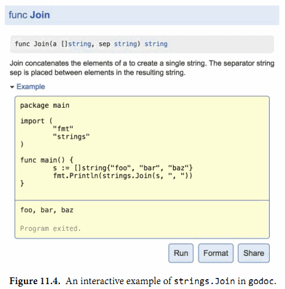

11.6. 示例函数
第三种被go test特别对待的函数是示例函数，以Example为函数名开头。示例函数没有函数参数和返回值。下面是IsPalindrome函数对应的示例函数：
func ExampleIsPalindrome() {
fmt.Println(IsPalindrome("A man, a plan, a canal: Panama"))
fmt.Println(IsPalindrome("palindrome"))
// Output:
// true
// false
}
示例函数有三个用处。最主要的一个是作为文档：一个包的例子可以更简洁直观的方式来演示函数的用法，比文字描述更直接易懂，特别是作为一个提醒或快速参考时。一个示例函数也可以方便展示属于同一个接口的几种类型或函数之间的关系，所有的文档都必须关联到一个地方，就像一个类型或函数声明都统一到包一样。同时，示例函数和注释并不一样，示例函数是真实的Go代码，需要接受编译器的编译时检查，这样可以保证源代码更新时，示例代码不会脱节。
根据示例函数的后缀名部分，godoc这个web文档服务器会将示例函数关联到某个具体函数或包本身，因此ExampleIsPalindrome示例函数将是IsPalindrome函数文档的一部分，Example示例函数将是包文档的一部分。
示例函数的第二个用处是，在go test执行测试的时候也会运行示例函数测试。如果示例函数内含有类似上面例子中的// Output:格式的注释，那么测试工具会执行这个示例函数，然后检查示例函数的标准输出与注释是否匹配。
示例函数的第三个目的提供一个真实的演练场。 http://golang.org 就是由godoc提供的文档服务，它使用了Go Playground让用户可以在浏览器中在线编辑和运行每个示例函数，就像图11.4所示的那样。这通常是学习函数使用或Go语言特性最快捷的方式。

本书最后的两章是讨论reflect和unsafe包，一般的Go程序员很少使用它们，事实上也很少需要用到。因此，如果你还没有写过任何真实的Go程序的话，现在可以先去写些代码了。